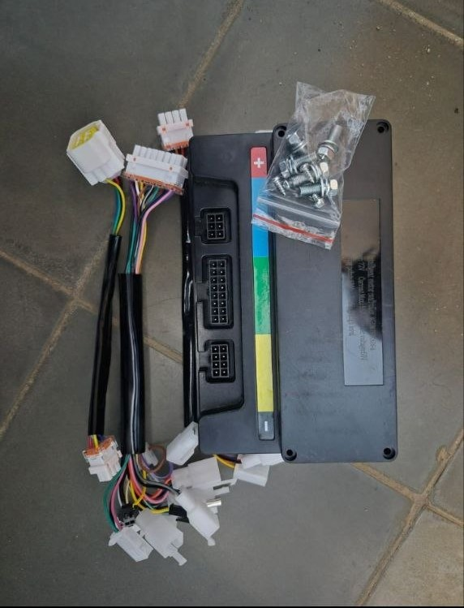
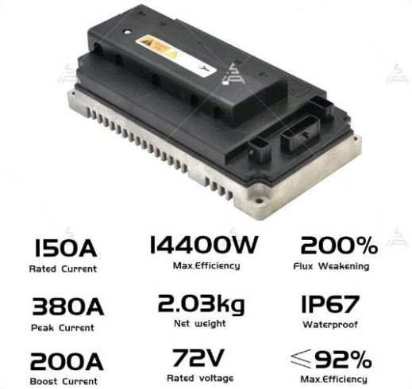

VOTOL EM-50

Controlador de entrada, ideal para motos eléctricas de baja potencia (hasta 2000 W). Voltaje de trabajo: 48 V a 72 V. Corriente nominal: 50 A. Perfecto para scooters urbanos y bicicletas eléctricas de alto rendimiento.
Todo sobre los controladores VOTOL para motos y vehículos eléctricos
Los controladores VOTOL son dispositivos de gestión electrónica diseñados para motores eléctricos brushless (sin escobillas) de corriente continua. Son fabricados por la empresa china Kelly Controls y se han convertido en una de las opciones más populares entre los entusiastas de las motos eléctricas por su relación calidad-precio, su versatilidad y su capacidad de programación mediante software.
Un controlador VOTOL actúa como el "cerebro" del sistema eléctrico: regula la corriente que llega al motor, gestiona el acelerador, el freno regenerativo, la temperatura y la comunicación con el display o BMS (Battery Management System).
VOTOL ofrece varias gamas de controladores según la potencia y el voltaje de trabajo. Estos son los modelos más utilizados en el mundo de las motos eléctricas:

Controlador de entrada, ideal para motos eléctricas de baja potencia (hasta 2000 W). Voltaje de trabajo: 48 V a 72 V. Corriente nominal: 50 A. Perfecto para scooters urbanos y bicicletas eléctricas de alto rendimiento.

El más popular de la gama. Soporta potencias de hasta 3000 W y voltajes de 48 V a 96 V. Corriente nominal: 100 A. Muy utilizado en motos tipo enduro y super motard eléctricas.

Gama alta para proyectos de alto rendimiento. Hasta 5000 W de potencia, voltajes de 72 V a 120 V y 150 A de corriente nominal. Requiere refrigeración adicional y se usa en motos de competición o conversiones de motos de combustión.
La siguiente tabla resume las características técnicas más relevantes de cada modelo:
| Modelo | Voltaje | Corriente nominal | Potencia máxima | Uso recomendado |
|---|---|---|---|---|
| EM-50 | 48 V – 72 V | 50 A | 2000 W | Scooters urbanos |
| EM-100 | 48 V – 96 V | 100 A | 3000 W | Motos enduro / supermotard |
| EM-150 | 72 V – 120 V | 150 A | 5000 W | Competición y conversiones |
Uno de los grandes atractivos de los controladores VOTOL es su software de programación para PC, que permite ajustar prácticamente todos los parámetros del sistema. Los pasos básicos son:
Consejo: antes de modificar parámetros, guarda una copia de la configuración original. Un ajuste incorrecto puede dañar el motor o el propio controlador.
¿Tienes dudas sobre tu controlador VOTOL? ¿Quieres compartir tu experiencia o pedir ayuda con la configuración? Escríbeme: